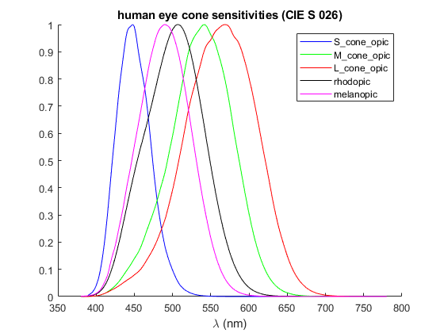

CIE_S_026_Data
Navigate to: Home | Alphabetic list | Grouped list | Source code: CIE_S_026_Data.m
Returns struct with the five human eye sensitivity spectra acc. to CIE S 026
Contents
Syntax
rv = CIE_S_026_Data()
Input Arguments
none
Output Arguments
rv: struct with fields:
- S_cone_opic_sensitivity: sensitivity spectrum of S (blue) cones
- M_cone_opic_sensitivity: sensitivity spectrum of M (green) cones
- L_cone_opic_sensitivity: sensitivity spectrum of L (red) cones
- rhodopic_sensitivity: sensitivity spectrum of rods (for night vision)
- melanopic_sensitivity: sensitivity spectrum of melanopic ipRGC cells (day/night)
Algorithm
Retrieves the data stored in CIES026_lam_S_M_L_r_m.mat
See also
(not yet implemented) CIE1964_XYZ, PlotCIExyBorder
Usage Example
function ExampleCIE_S_026_Data() CIES026 = CIE_S_026_Data(); figure(); clf; hold on; PlotSpectrum(CIES026.S_cone_opic_sensitivity,'b'); PlotSpectrum(CIES026.M_cone_opic_sensitivity,'g'); PlotSpectrum(CIES026.L_cone_opic_sensitivity,'r'); PlotSpectrum(CIES026.rhodopic_sensitivity,'k'); PlotSpectrum(CIES026.melanopic_sensitivity,'m'); legend({'S_cone_opic','M_cone_opic',... 'L_cone_opic','rhodopic','melanopic'},'Interpreter','none'); xlabel('\lambda (nm)'); title('human eye cone sensitivities (CIE S 026)'); D65 = CIE_Illuminant('D65'); D65_lm = 683 * IntegrateSpectrum(D65, Vlambda()); D65_melanopic_mW = 1000 * IntegrateSpectrum(D65, CIES026.melanopic_sensitivity); fprintf('6500 K cold white daylight spectrum has %0.2f mW/lm melanopic efficacy\n', D65_melanopic_mW/D65_lm); Planck2700 = PlanckSpectrum(360:830,2700); Planck2700_lm = 683 * IntegrateSpectrum(Planck2700, Vlambda()); Planck_melanopic_mW = 1000 * IntegrateSpectrum(Planck2700, CIES026.melanopic_sensitivity); fprintf('2700 K warm white blackbody spectrum has %0.2f mW/lm melanopic efficacy\n',Planck_melanopic_mW/Planck2700_lm); end
6500 K cold white daylight spectrum has 1.33 mW/lm melanopic efficacy 2700 K warm white blackbody spectrum has 0.61 mW/lm melanopic efficacy